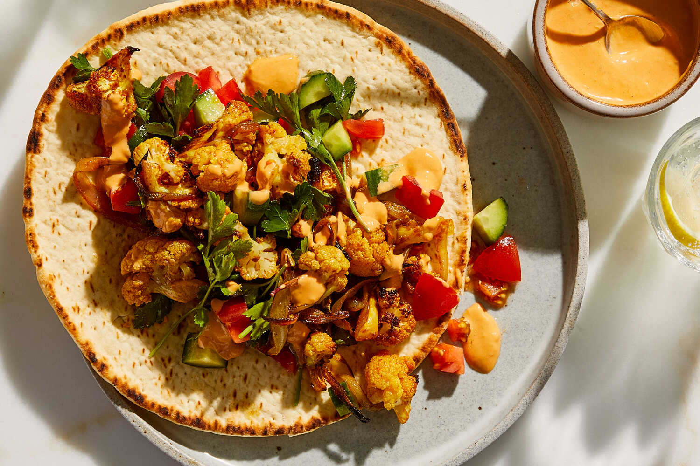

The Special Mix Shawarma is a premium combination of multiple meats,
vegetables, and sauces, designed for those who want the ultimate
shawarma experience. Each bite delivers layers of flavors and textures,
making it a feast for the senses.

Recipe Ingredients
Chicken strips
Beef strips
Pita or shawarma bread
Garlic sauce
Hot chili sauce
Sliced onions
Tomatoes
Cucumber strips
Lettuce or cabbage
Pickles (optional)
Paprika, chili powder, and black pepper
Salt
Vegetable oil
Preparation Procedure
Slice chicken and beef into thin strips.
Marinate separately with spices, salt, and oil for 2–3 hours.
Grill or pan-fry both meats until tender and slightly charred.
Warm pita or shawarma bread.
Spread garlic sauce and hot sauce on the bread.
Add cooked meats and layer fresh vegetables.
Optional: add pickles or feta cheese for extra flavor.
Wrap tightly and heat briefly for a crispy finish.
serving
The Special Mix Shawarma is juicy, spicy, and savory,
with layers of flavors from the combination of chicken, beef,
sauces, and fresh vegetables. Perfect for sharing or indulging
in a hearty gourmet wrap.
Serving Suggestion
Serve with fries, a cold drink, and extra sauces on the side
for a complete restaurant-style meal.